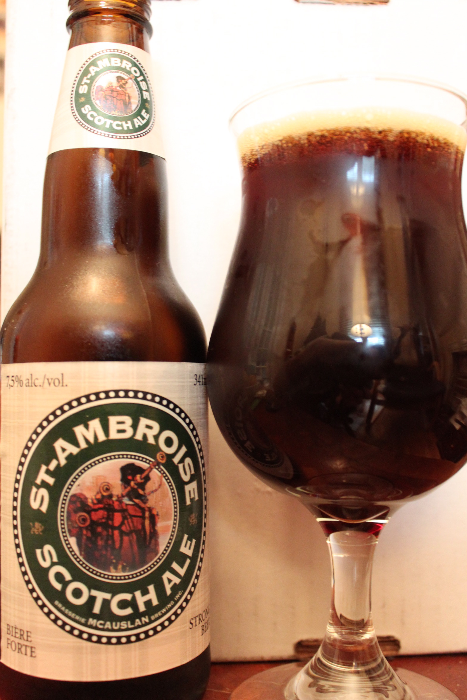
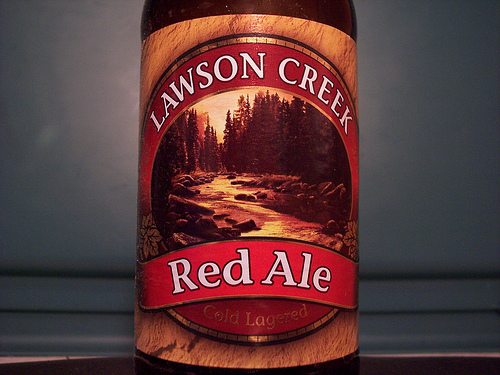
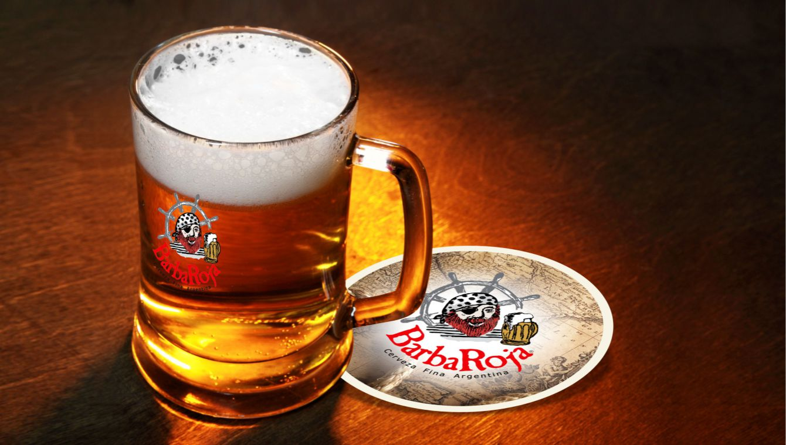

La Roja

Sus Orígenes
No se trata de un invento ni de un capricho de productores artesanales. Originaria de Escocia, la cerveza roja se encuentra desde hace siglos entre nosotros. Distinguida por su elaboración en la que predominan la malta y la cebada y su color rubí, se diferencia de su prima, la cerveza negra, porque casi no incluyen lúpulo, vegetal difícil de conseguir en Escocia y Gran Bretaña. Con una graduación alcohólica cercana a los 5 grados, se distingue además por sus aromas frutales. La cerveza roja más conocida es la variedad llamada Scotch Ale. Otra variedad es la Red Ale, proveniente de Irlanda, en la que predomina la malta caramelo y tostada, que refuerza su sabor dulce. La tipo Viena es una lager, que contiene baja fermentación y un color ámbar rojizo. A las de éste tipo se las conoce en Alemania como Márzen-Oktoberfest.
Producción Argentina
En la producción cervecera artesanal argentina se destacan la acaramelada versión llamada Diabla, de la marca bonaerense Barba Roja. Desde Mar del Plata, la marca Antares comercializa varios tipos de cerveza roja. Esta marca se caracteriza también por haber extendido el concepto de brew pub, con espacios recreativos especialmente adaptados para el consumo de cerveza. Quien quiera probar la roja más austral del mundo tendrá que trasladarse o pedirla a algún amigo de Ushuaia, donde se producen la Drake Beer y también la marca Dublin, que incluyen variantes rubias y negras. Pero en la pulpería y alrededores, existe una clara debilidad por la artesanal de Anibal Loggia, que lleva por nombre La Loggia, y que con su calidad y fórmula secreta, tiene poco que envidiarle a las europeas más famosas.
Algunos Tipos de Cerveza Roja
Scotch Ale
Dentro de la elaboración casera de cerveza, una de las variedades más requeridas es la SCOTCH ALE . Ésta es una variedad originaria de Escocia y que tiene como su mayor característica una espléndida coloración rubí, que le da una entidad única. Su sabor, además, es predominantemente malteado, donde también se pueden apreciar los dejos frutales.
Red Ale
Esta elección tiene más cuerpo, con un profundo color rojo debido a la mayor cantidad de malta caramelo y un poquito de malta tostada – muy frutosa y llena de sabor, aúnque no más fuerte en contenido alcohólico que la Pale (ambas tienen 4,5%)- ideal para aperitivos, o carnes blancas, pescados y mariscos.
Barba Roja
La cerveza Barba Roja es un producto Premium que se destaca por una gran gama de sabores y estilos. Su calidad ha logrado que los comercios la quieran tener por ser un producto tradicional y exótico, debido a su origen y variedades, algunas de ellas muy particulares, como la cerveza Floral, que contiene extractos de flores naturales.